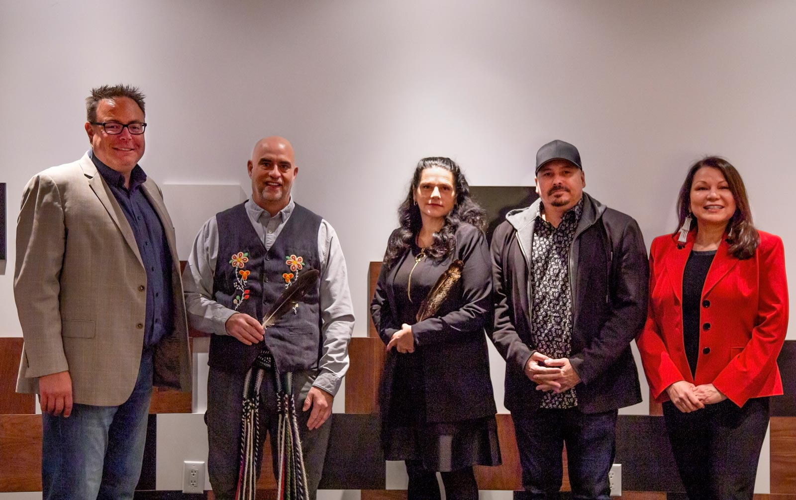

Rapport annuel 2018-2019
Par l'Unité de l'impact et de l'innovation
Avant-propos
L’Unité de l’impact et de l’innovation est composée de fonctionnaires très compétents et dévoués qui visent à offrir les meilleurs programmes et politiques possible en adoptant une approche « axée sur la mission » en matière de transformation du gouvernement. L’hypothèse au cœur de notre travail est qu’un accent continu sur les méthodes fondées sur les résultats et le travail horizontal à l’échelle du gouvernement et des secteurs nous permet d’obtenir des résultats améliorés et mesurables pour la population. Ceux qui travaillent avec le gouvernement et au sein de celui-ci savent que ce n’est pas toujours ainsi que nous travaillons.
Nous comprenons que nous gérons les fonds publics et devons assumer les responsabilités que cela sous-entend. Ainsi, il nous appartient de moderniser nos approches relatives aux politiques et aux programmes afin qu’ils soient axés sur l’atteinte de résultats collectifs, et montrent une valeur ajoutée et une incidence significative. C’est pourquoi nous avons continué de jouer un rôle actif dans le mouvement mondial des gouvernements qui s’efforcent d’intégrer des méthodes courantes telles que les prix et défis, l’introspection comportementale, ainsi que les modèles de financement de paiement rémunération au rendement et de paiement à la réussite. La promesse de ces méthodes est qu’elles concentrent les efforts non pas sur le processus ou les extrants d’un programme, mais plutôt sur la définition claire du résultat recherché et sur l’adoption d’une approche multisectorielle pour y parvenir.
Ces approches exigent de nouveaux modèles de partenariat où le gouvernement, les organismes sans but lucratif et le secteur privé doivent travailler très différemment ensemble. Nous croyons fermement qu’un engagement solide, ainsi qu’une conception et une élaboration conjointes, constitue le meilleur moyen d’y parvenir.
L’exercice 2018-2019 a été notre première année complète avec Impact Canada, notre principale plateforme pour réaliser ce travail. Avec l’aide de partenaires nationaux et internationaux, nous avons passé de nombreuses heures à élaborer et à parfaire les méthodes afin de faire en sorte que les approches que nous adoptons sont saines, fondées sur les faits probants et rigoureuses dès leur conception. Ce type de travail exige beaucoup plus d’efforts que les façons de faire traditionnelles, mais nous croyons que le jeu en vaut la chandelle.
“Ce type de travail exige beaucoup plus d’efforts que les façons de faire traditionnelles, mais nous croyons que le jeu en vaut la chandelle.”
Sans surprise, le gouvernement dans son ensemble n’est pas prêt à adopter cette façon de faire, mais nous avons observé de grands pans qui le sont. Le changement est difficile et peut déstabiliser certaines personnes. Notre perception du risque collective n’est pas calibrée comme il se doit. Nous ne devons pas faire d’amalgame entre la nouveauté et le risque. Nous devons plutôt toujours remettre en question le statu quo, comprendre les risques inhérents à celui-ci, et reconnaître quand nous devons, de façon responsable, mettre à l’essai de nouveaux éléments pour atteindre l’objectif stratégique désiré. Ultimement, nous devons adopter une approche plus itérative en matière de conception et d’exécution de politiques et de programmes.
Nous continuons de travailler fort pour passer du concept à la mise en œuvre, et pour illustrer les possibilités et faire accepter ces méthodes à plus grande échelle.
Nous sommes encore aux premières étapes et nous ne pouvons pas faire état de suffisamment de résultats concrets, mais de grandes améliorations ont été apportées aux processus. Les intervenants externes nous ont fait part de commentaires positifs à propos de ce nouvel aspect du gouvernement. De plus, nous avons reçu des indications selon lesquelles nos méthodes attirent des intervenants non traditionnels, attraction fondée sur la prémisse que les nouveaux joueurs peuvent nous mener à de meilleures solutions qui n’ont pas encore été envisagées.
Ces méthodes ne constituent pas une solution miracle ni la réponse à toutes les difficultés en matière de politiques publiques. Nous avons mûrement réfléchi au choix des projets pour couvrir les secteurs des politiques sociales, économiques et environnementales, grandes et petites, afin qu’au moment de passer à l’évaluation des retombées, nous disposions d’une compréhension accrue des mesures (efficacité, public cible et circonstances connexes). Voilà pourquoi nous mettons également au point des méthodologies de mesure des retombées pour évaluer les progrès, afin que nous soyons à même de tirer des leçons et de nous améliorer de façon continue.
L’année dernière a été remplie d’excitation, de promesse et de grands efforts. C’est pourquoi j’aimerais personnellement remercier mon équipe et mes collègues du Bureau du Conseil privé, d’Agriculture et Agroalimentaire Canada, de l’Agence de promotion économique du Canada atlantique, du Service correctionnel du Canada, de Relations Couronne-Autochtones et Affaires du Nord Canada, d’Emploi et Développement social Canada, de Finances Canada, de Pêches et Océans Canada, de Santé Canada, de Patrimoine canadien, de Services aux Autochtones Canada, d’Infrastructure Canada, de Ressources naturelles Canada, de Sécurité publique Canada et du Secrétariat du Conseil du Trésor. Je tiens à offrir un grand merci également à notre comité consultatif et à tous nos partenaires externes qui ont collaboré avec nous et ont contribué à orienter notre travail.
Nous nous attendons à une autre année excellente et productive, alors que nous continuons tous à travailler pour améliorer la vie des Canadiennes et des Canadiens.

- Rodney Ghali
- Secrétaire adjoint du Cabinet
- Unité de l’impact et de l’innovation
- Bureau du Conseil privé
Notre incidence
-

S’attaquer aux lacunes du marché de l’innovation afin de stimuler la participation du secteur privé et la commercialisation de produits, de processus et de services novateurs dans des secteurs où existe un grand potentiel d’application de l’ingéniosité canadienne et améliorer les résultats sociaux, économiques ou environnementaux. Voir par exemple l’appui au défi « À tout casser » de Ressources naturelles Canada..
-
Joindre davantage de personnes, de façon plus efficace, afin de stimuler un accès amélioré aux études postsecondaires chez les familles à faible revenu. Voir par exemple la collaboration avec ServiceOntario en vue d’intégrer les inscriptions au REEE.
-

Aider à comprendre ce qui est efficace au moyen d’évaluations de l’incidence fondées sur la recherche afin de générer des faits probants sur l’efficacité des interventions et de déterminer les éléments pouvant être mis à l’essai de façon approfondie ou mis à l’échelle pour répéter les efforts fructueux et terminer les programmes moins efficaces. Voir par exemple les mesures servant à endiguer la diminution des dons de charité dans la population en misant sur l’introspection comportementale et l’expérimentation.
-

Attirer des partenaires gouvernementaux non traditionnels de divers secteurs, notamment le secteur privé, qui apportent des points de vue nouveaux et des approches novatrices pour résoudre des problèmes complexes de politiques publiques. Voir par exemple l’appui au « Défi des technologies de vérification des drogues » de Santé Canada.
-
 Tirer profit des approches de financement novateur pour utiliser les ressources du secteur privé afin d’atteindre des objectifs communs, de faire du gouvernement un meilleur partenaire et de déplacer l’accent vers le paiement à la réussite plutôt que sur le paiement au processus. Voir par exemple l’examen des approches de paiement à la réussite avec Santé Canada.
Tirer profit des approches de financement novateur pour utiliser les ressources du secteur privé afin d’atteindre des objectifs communs, de faire du gouvernement un meilleur partenaire et de déplacer l’accent vers le paiement à la réussite plutôt que sur le paiement au processus. Voir par exemple l’examen des approches de paiement à la réussite avec Santé Canada. -
 Contribuer à la création, à l’échelle internationale, de pratiques exemplaires par l’élaboration et la diffusion de produits de connaissances et la contribution aux efforts des organisations de pointe de partout dans le monde, ce qui mène à une reconnaissance internationale de la participation de l’UII à l’écosystème de l’innovation. Voir par exemple « Modèles de mesure des impacts : Guide des méthodes de mesure des impacts ».
Contribuer à la création, à l’échelle internationale, de pratiques exemplaires par l’élaboration et la diffusion de produits de connaissances et la contribution aux efforts des organisations de pointe de partout dans le monde, ce qui mène à une reconnaissance internationale de la participation de l’UII à l’écosystème de l’innovation. Voir par exemple « Modèles de mesure des impacts : Guide des méthodes de mesure des impacts ».
1. À propos de nous
Depuis sa création en 2017, l’Unité de l’impact et de l’innovation (UII) axe ses efforts sur la collaboration avec les autres ministères fédéraux, les autres ordres de gouvernements et les partenaires externes pour favoriser la mise en place de programmes et services inventifs conçus pour améliorer les résultats sociaux, économiques et environnementaux pour les citoyens. Plus particulièrement, l’UII se concentre sur l’amélioration des résultats pour les citoyens par l’utilisation d’un ensemble d’approches novatrices créées pour obtenir une valeur publique accrue en matière de prestation de programmes et de services. L’UII a pour objectif de mobiliser une vaste gamme d’intervenants pour contribuer à la résolution de problèmes de société, met l’accent sur les initiatives et expériences qui permettent de mesurer l’incidence de façon rigoureuse et vise à maintenir des normes et une validité élevées dans l’application de ces instruments. L’UII utilise quelques approches principales pour aider les ministères du gouvernement du Canada, à savoir les « prix et défis », les modèles de financement de paiement à la réussite et l’introspection comportementale.
Le saviez-vous?
L’Unité de l’impact et de l’innovation appuie ses partenaires à l’aide des ressources suivantes :
- Un ensemble pangouvernemental souple de modalités et conditions de subventions et de contribution qui permet d’établir un lien entre le financement et les résultats obtenus (prix et défis, financement fondé sur le succès) et de financer des évaluations rigoureuses fondées sur la recherche.
- Une approche de dotation novatrice, dans le cadre de son programme de fellowship d’Impact Canada.
- Le Centre d’expertise, soit une petite équipe qui travaille avec les ministères pour appliquer les normes les plus élevées de conception solide et rigoureuse avant la mise en œuvre du programme.
- La plateforme Web Impact Canada, site Web réputé et centralité pour les initiatives d’Impact Canada.
Pour obtenir de plus amples renseignements, communiquez avec nous : iiu-uii@pco-bcp.gc.ca
1.1 Unité de l’impact et de l’innovation

L’Unité de l’impact et de l’innovation est composée d’une équipe interdisciplinaire hautement qualifiée ayant des dizaines d’années d’expérience combinée dans les domaines de l’élaboration et de la gestion de politiques et de programmes, du financement fondé sur les résultats, de l’évaluation, de la négociation de partenariats et d’introspection comportementale.
-

Rodney Ghali
Secrétaire adjoint du Cabinet
-

Chad Hartnell
Directeur des opérations
-

Saskia Jarvis
Conseillère principale, Opérations
-

Jessica Ly
Adjointe exécutive au secrétaire adjoint
Dirigeants
Politiques et financement novateur
-

David Donovan
Chef
-

Kristalyn Laryea
Conseillère principale
-

Katharina Wolff
Conseillère principale
Introspection comportementale
-

Elizabeth Hardy
Chef principale
-

Haris Khan
Conseiller
-

Alyssa Whalen
Conseillère
Mobilisation du public
-

Dr. Michael Haber
Chef
-

Laurie Bennett
Agente de communication multimédia
-

Sarah MacMaster
Conseillère subalterne
-

Chris Soueidan
Concepteur visuel
Capacité et partenariats
-

Julie Greene
Chef
-

Craig Joyce
Conseiller principal, Méthodes
-

Janelle Lanoix
Conseillère principale
Programme de « Fellowship » d'Impact Canada
-
Valérie Anglehart
Gestionnaire de programme
1.2 1.2 Programme de « fellowship »
Dans le cadre de la mission de l’UII de favoriser l’innovation dans la fonction publique, le programme de « fellowship » d’Impact Canada recrute des experts au sein de la fonction publique à l’appui des efforts déployés sous Impact Canada, ainsi que des efforts globaux du gouvernement pour accélérer le recours à de nouvelles approches de programmes fondés sur les résultats. Il vise à attirer les personnes talentueuses et à renforcer les capacités dans cinq secteurs opérationnels clés :
-
L’introspection comportementale (IC) (IC) applique les résultats en matière de psychologie, d’économie et d’autres sciences sociales aux travaux du gouvernement. Les praticiens de l’IC vérifient généralement ces idées en utilisant des méthodologies expérimentales rigoureuses pour comprendre ce qui fonctionne en vue d’atteindre de meilleurs résultats en matière de politique publique pour les Canadiens.
-
Le financement novateur (FN) est le mélange stratégique de ressources et de capitaux publics, privés, philanthropiques et sans but lucratif pour atteindre des résultats positifs sur les plans économique, social, ou environnemental. Cela comprend l’utilisation d’instruments de paiement à la réussite, où les bénéficiaires du financement reçoivent les paiements en fonction de l’atteinte de résultats qui peuvent améliorer la vie des Canadiennes et des Canadiens (p. ex. les obligations à impact social, des prix et défis).
-
La mesure des impacts (MI) peut inclure un éventail de méthodes expérimentales (essais randomisés contrôlés) et quasi expérimentales. Il s’agit du processus d’utilisation de la méthodologie scientifique pour déterminer les résultats atteints par un programme donné. Il permet l’attribution de changements en matière de résultats sociaux, économiques ou environnementaux.
-

Les prix et défis réfèrent aux modèles de financement novateurs fondés sur des incitatifs qui récompensent la première ou la meilleure solution à un problème particulier, en fonction d’un ensemble des critères prédéterminés. L’objectif n’est pas seulement de trouver les meilleures idées et solutions, mais aussi d’assurer qu’elles démontrent qu’elles peuvent produire des résultats tangibles et mesurables pour les Canadiens.
-
La science des données est un domaine interdisciplinaire qui utilise des méthodes, des processus, des algorithmes et des systèmes scientifiques pour extraire des connaissances et des points de vue provenant de sources de mégadonnées, sous diverses formes.
Depuis le lancement du programme l’an dernier, cinq processus de recrutement ont été menés à bien. La cohorte actuelle du programme de « fellowship » est composée de sept « fellows » en introspection comportementale, de trois « fellows »en financement novateur et de trois « fellows » en mesure des retombées, répartis dans neuf ministères. Nous cherchons également à élargir le programme à d’autres niveaux de gouvernement et à discuter des occasions de placement avec les administrations provinciales, territoriales et municipales. Vous trouverez des précisions sur le travail ou les projets des « fellows » dans la section 3.1.3 de ce rapport.
Le programme de « fellowship » se traduit par des gains d’efficacité concernant le recrutement externe au sein de la fonction publique fédérale. En moyenne, il faut 197 jours pour embaucher un nouvel employé dans la fonction publique fédérale à l’aide d’un processus de concours annoncé externe. La moyenne du programme de « fellowship » est de 90 jours. Le processus le plus efficace a été mené à terme en seulement 42 jours.
Nos « fellows » :
Introspection comportementale
- Dr. Guillaume Beaulac
- Dr. Lauryn Conway
- Dr. Amanda Desnoyers
- Michael Hewlett
- Dr. Kyle Hubbard
- Dr. Meera Paleja
- Dr. Dhawal Selarka
Financement novateur
- Sophie Méchin
- Stefan Pagura
- Matthias Pries
Mesure des retombées
- Lauren Dodds
- Dr. Gabriel Rompré
- Anna Vanderkooy
Haut de la page« Le programme de « fellowship », parrainé par l’Unité de l’impact et de l’innovation du Bureau du Conseil privé, nous permet d’expérimenter des façons d’amener de nouvelles compétences importantes. »
- Greffier du Conseil privé, 26e Rapport annuel au Premier ministre
1.3 1.3 Le comité consultatif

Rangée du milieu : Saadia Madsbjerg, David Martin, Jaykumar Menon, Hector Mujica, Tracy P. Palandjiann
Rangée du bas : Claude Pinard, Irfhan Rawji, Dilip Soman, Tamara Vrooman, Bill Young
Pour remplir un engagement de l’UII pris dans le dernier rapport annuel, l’Unité a organisé la première rencontre du Comité consultatif d’Impact Canada en novembre 2018.
Sous la présidence d’Ilse Treurnicht, le Comité réunit un groupe distingué de cadres supérieurs des secteurs privé, philanthropique, caritatif et universitaire. Son mandat consiste à fournir à l’UII des avis sur les nouvelles tendances et les pratiques exemplaires pour orienter la façon dont les programmes pourraient améliorer leur incidence par l’utilisation d’approches de financement novatrices (comme les prix et défis, les structures de paiement à la réussite et l’investissement d’impact), l’introspection comportementale et des techniques rigoureuses de mesure et d’évaluation.
Tirant profit des expériences et leçons retenues tant au Canada qu’à l’échelle internationale, le Comité aide l’UII à définir son rôle unique au sein de l’écosystème d’innovation mondial. Plus près de nous, le comité continuera de jouer un rôle essentiel dans l’élaboration d’un plan stratégique qui orientera les travaux futurs et dans la détermination des tendances que l’UII peut prendre en considération dans le cadre des efforts qu’elle mène alors qu’elle continue d’aider les ministères du gouvernement du Canada.
2. Ce que nous faisons
L’UII collabore avec un large éventail de partenaires pour appuyer les ministères fédéraux dans l’exécution de politiques et de programmes qui importent aux Canadiens. En mettant l’accent sur des approches axées sur les résultats, l’UII s’emploie à transformer la manière dont fonctionne le gouvernement.
Approches méthodologiques relatives à l’innovation
En mettant l’accent sur la prestation de services et de programmes fédéraux, l’UII s’affaire à déterminer, à mettre à l’essai et à mettre à l’échelle des méthodes et outils inventifs qui contribuent à présenter des mesures centrées sur les résultats. À l’aide d’approches méthodologiques novatrices, l’UII a montré que l’innovation peut en fait être menée de façon rigoureuse et que les résultats de ces mesures peuvent être définis, mesurés et évalués.
Attention constante sur la mise en œuvre
En mettant l’accent sur le « comment », l’UII aide les ministères fédéraux et les autres partenaires à adopter des approches souples axées sur les résultats qui conviennent à la population. S’appuyant sur son Centre d’expertise d’Impact Canada, l’UII offre des conseils et des lignes directrices sur l’application des prix et défis, des approches de paiement à la réussite et l’introspection comportementale aux programmes et services fédéraux. Elle permet également un accès aux ressources clés qui aident les ministères à appliquer ces méthodes novatrices, y compris un ensemble de modalités et conditions souples touchant les subventions et les contributions, et un site Web bien connu et centralisé bénéficiant de l’appui d’experts internes en conception visuelle et graphique. L’UII offre un modèle de service pouvant être adapté en fonction de facteurs comme les besoins du ministère partenaire, la complexité du projet et la demande en ressources actuelle.
Atteinte de résultats à grande échelle
De sa position unique au sein du Bureau du Conseil privé, l’UII travaille à l’échelle des mandats ministériels pour mesurer les répercussions, relever les facteurs de succès de la mise en œuvre et déterminer les mesures efficaces au sein du contexte fédéral. Elle profite également de l’expérience des autres gouvernements, des organismes sans but lucratif et des organisations du secteur privé pour mettre en place des approches similaires. Collectivement, ces mesures permettent d’accroître notre compréhension de la meilleure façon d’appliquer ces approches tout en tenant compte du contexte opérationnel, des forces et des limites organisationnelles, ainsi que des priorités stratégiques globales du gouvernement du Canada. De plus, l’appui offert par l’UII aux principaux comités de la haute direction fait en sorte que ces mesures sont examinées par la direction de la fonction publique, et à ce qu’elles soient orientées par cette direction et par leaders d’opinion et les experts.
Transformation à l’échelle des systèmes par le leadership et la stratégie
L’UII continue d’axer ses efforts sur les mesures permettant le changement à l’échelle systémique, y compris l’expérimentation et la mise à l’essai d’approches novatrices, dans le cadre de son appui continu au Groupe de travail des sous ministres sur l’innovation dans le secteur public et de sa coprésidence du Comité des sous-ministres adjoints sur l’expérimentation.
Groupe de travail des sous-ministres sur l’innovation dans le secteur public.
Il y a un an que le Groupe de travail a reçu son nouveau mandat de la part du greffier du Conseil privé, mandat qui cible deux objectifs : 1) faciliter la transformation des principaux systèmes, 2) expérimenter avec des technologies perturbatrices.
Parmi les faits saillants de la dernière année, notons ce qui suit :
Orientation d’un document-cadre habilitant, la Feuille de route de la Stratégie de données du gouvernement du Canada, qui a été lancé le 23 novembre 2018. Il vise à assurer une approche pangouvernementale coordonnée sur la façon dont le gouvernement peut utiliser les données de façon plus stratégique pour accroître la valeur et obtenir de meilleurs résultats pour les Canadiens.
Augmentation de l’utilisation d’approches de programmes fondés sur les résultats (p. ex. mécanismes fondés sur les défis, initiatives de paiement à la réussite) en définissant deux stratégies distinctes quant à la façon dont les approches de programmes fondés sur les résultats peuvent être mises en place : 1) Modalités génériques du Secrétariat du Conseil du Trésor (SCT) et 2) Impact Canada.
Consultation d’experts sur certains des principaux enjeux stratégiques qui stimulent l’innovation dans le secteur public, notamment le recours à l’intelligence artificielle pour rendre les opérations aussi efficaces que possible, et l’utilisation de la création conjointe et d’approches d’établissement de partenariats pour comprendre la façon dont les gouvernements peuvent mobiliser tous les secteurs de la société pour tirer profit des ressources et de l’expertise afin de résoudre des problèmes de société complexes.
Orientation d’une discussion de bilan approfondie sur l’engagement du mandat d’expérimentation en vue de cerner et d’éliminer les obstacles à la mise en œuvre.
« Bien que nous ayons fait des progrès au cours de cette première année, nous commençons seulement à libérer le potentiel des fonctionnaires pour intégrer l’innovation dans nos programmes, nos politiques et nos activités. Nous espérons accélérer le rythme de nos progrès au cours de l’année à venir. »
Les coprésidents Graham Flack, sous-ministre, Emploi et Développement social, et Matthew Mendelsohn, sous-secrétaire du Cabinet (Résultats et livraison), Bureau du conseil privé
Entrepreneurs du gouvernement du Canada
Pour aider à l’atteinte du mandat du Groupe de travail des sous-ministres sur l’innovation dans la fonction publique, les membres ont recruté une cohorte de 18 fonctionnaires talentueux connue sous le nom des Entrepreneurs du gouvernement du Canada (EGC), qui sont membres à part entière du Groupe de travail. La création des EGC est un exemple d’efforts importants visant à améliorer les compétences de la fonction publique fédérale et à renforcer la capacité requise pour appuyer les programmes expérimentaux.
En travaillant en petites équipes diversifiées à l’échelle des ministères, les EGC mettent à l’essai de nouvelles façons de faire avancer des projets qui ne relèvent pas d’un ministère ou d’un organisme en particulier. Leur rôle d’ambassadeurs de l’innovation consiste à sensibiliser les fonctionnaires et à les inciter à appliquer de nouveaux outils et de nouvelles approches à leur travail. De plus, les EGC reçoivent une formation en leadership et du soutien de la part de Nesta’s States of Change, une approche d’apprentissage du secteur public conçue pour affermir la capacité d’innovation dans l’ensemble des gouvernements.
Comité des sous-ministres adjoints sur l’expérimentation
À titre de coprésident du Comité des sous-ministres adjoints sur l’expérimentation (avec le SCT), l’UII a contribué à la direction des travaux visant à accélérer, à approfondir et à institutionnaliser l’expérimentation et l’innovation au sein du gouvernement. Antérieurement, le Comité a mené une série d’initiatives de recherche pour déterminer les domaines nécessitant des mesures pour encourager l’expérimentation au sein du gouvernement, et a formulé des propositions pour s’y attaquer.
« Les fonctionnaires souhaitent obtenir des signaux clairs que la prise de risques est acceptée. L’innovation dans la fonction publique demande de grands efforts, et encore davantage au niveau opérationnel. Pour que l’innovation dans la fonction publique puisse prospérer et croître, la main d’oeuvre a besoin du soutien et des outils pour remettre en cause le statu quo. »
Minh On et Laura Portal Avelar, gestionnaires de mission de la première cohort d’EGC
-
Description du graphe de croissance rapide
Depuis son lancement en 2017, Impact Canada a connu une croissance rapide.
Légende
- DOI = Défi ou initiative
- PASR = Paiement axé sur le rendement
- IC = Introspection comportementale
2017 - Phase de conception
- Mars - Annonce dans le budget
- Mai - Approbation du Cabinet
- Octobre - Essai des FAC terminé (IC)
- Novembre - Approbation du Conseil du Trésor
- Novembre - Lancement du Défi des villes intelligentes (DOI)
- Décembre - Essai 1 des dons de charité terminé (IC)
2018 - Phase de construction
- Janvier - Programme de bourses lancé (IC) (DOI) (PASR)
- Mai - Lancement du Défi des femmes en technologies propres (DOI)
- Juin - Finalistes du Défi des villes intelligentes (DOI)
- Juin - Étude de faisabilité sur les opioïdes lancé
- Août - Lancement du Défi Visez haut! (DOI)
- Août - Annonce l’Initiative d’innovation pour la construction de logements dans les communautés autochtones (DOI)
- Septembre - Finalistes du Défi des femmes en technologies propres (DOI)
- Octobre - Lancement du Défi des technologies de vérification des drogues (DOI)
- Octobre - Lancement du défi Branchés sur l’avenir (DOI)
- Novembre - Lancement du défi À tout casser! (DOI)
- Décembre - Pardon pour possession simple de cannabis (IC) (PASR)
2019 - Phase de croissance
- Février - Lancement de l’Initiative autochtone pour réduire la dépendance au diesel
- Février - Essai 2 des dons de charité terminé (IC)
- Avril - Lancement du logement autochtone (DOI)
- Avril - Demi-finalistes du Défi des technologies de vérification des drogues
- Avril - Demi-finalistes du défi À tout casser! (DOI)
- Mai - Lancement du défi sur la conception écoénergétique des coques de bateau (DOI)
- Mai - Annonce des gagnants du Défi des villes intelligentes (DOI)
- Mai - Annonce des demi-finalistes du défi Branchés sur l’avenir
- Juin - Lancement du Défi innovation pour les baleines (DOI)
- Juin - Lancement des consultations sur les défis alimentaires (DOI)
- Juin - Essai de Toronto sur le bon d'études canadien terminé (IC)
- Juin - Annonce des finalistes de l’Initiative autochtone pour réduire la dépendance au diesel
- Juillet - Fin de l’étude de faisabilité sur les opioïdes et l’automutilation (PASR)
- Août - Annonce des finalistes du défi Branchés sur l’avenir (DOI)
- Novembre - Annonce des finalistes du Défi des technologies de vérification des drogues (DOI)
Le budget de 2019 prévoit 300 M$ pour le Défi d'offre de logements avec INFC et la SCHL, 20 M$ pour le Défi de la réduction du gaspillage alimentaire avec AAC, des Initiatives axées sur les résultats pour assurer la sécurité alimentaire avec AAC et CanNor dans le cadre de la nouvelle politique alimentaire proposée par le Canada et des Initiatives axées sur les résultats dans le cadre de la nouvelle stratégie contre le racisme avec Patrimoine canadien
3. Nouvelles approches des grands enjeux
L'UII aide les ministères fédéraux à appliquer des modèles de financement axés sur les résultats, comme les prix et défis, à utiliser l’introspection comportementale pour améliorer les politiques et les services et à intégrer la mesure des retombées dans la mise en œuvre des projets et des programmes pour obtenir de meilleurs résultats qui sont mesurables.
3.1 3.1. Rémunération à la réussite
Les modèles de financement axés sur les résultats peuvent prendre diverses formes, notamment des prix et des défis, ainsi que des contrats de paiement à la réussite. Au cours de la dernière année, l'UII a continué d'aider les ministères à élaborer des possibilités de financement novatrices qui réunissent les meilleures idées et les plus brillants talents, et à récompenser les organisations et les personnes qui produisent des résultats très positifs pour les Canadiens.
L'UII favorise les partenariats avec divers intervenants. Vous voulez résoudre un problème ou parrainer un prix? Contactez-nous.
Les prix et défis offrent du financement et d'autres ressources pour aider les innovateurs à mettre leurs idées en pratique. Il s'agit d'un exemple d'une approche d'innovation ouverte qui concentre les ressources sur le résultat souhaité, et non sur des processus compliqués.
3.1.1 Prix et défis phares
Deux volets de programme phares ont été lancés dans le cadre d'Impact Canada en 2017 :

A. Défi des villes intelligentes
Le Défi des villes intelligentes vise à aider les collectivités de toute taille à améliorer la vie de leurs résidents grâce à l'innovation, aux données et à la technologie connectée. Financé par Infrastructure Canada, le projet versera 300 millions de dollars sur 11 ans.

B. Défi Impact Tech Propre
Le Défi Impact Tech Propre vise à trouver de nouvelles solutions dans certains domaines. Financé par Ressources naturelles Canada, le projet versera 75 millions de dollars sur quatre ans.
3.1.1 (a) Défi des villes intelligentes
Le Défi des villes intelligentes est un concours pancanadien ouvert aux collectivités de toutes tailles, y compris les municipalités, les administrations régionales et les collectivités autochtones (Premières Nations, Métis et Inuit). Le Défi encourage les collectivités à adopter une approche de ville intelligente pour améliorer la vie de leurs résidents grâce à l'innovation, aux données et à la technologie connectée.
Le processus de mise en candidature s'est terminé le 24 avril 2018. Nous avons reçu 130 candidatures admissibles de collectivités de partout au Canada. Vingt de ces candidatures ont été retenues, et chaque ville a reçu une subvention de 250 000 $ pour l'aider à élaborer sa proposition finale.

- 130 candidatures reçues
- 20 candidatures (conjointes ou individuelles) de communautés autochtones
- La plus grande collectivité ayant soumis une demande compte 2.7 million d'habitants
- La plus petite collectivité ayant soumis une demande compte 185 habitants
- 100% des finalistes ont noué un partenariat avec au moins quatre des secteurs suivants : entreprises privées, organismes à but non lucratif, milieu universitaire, services publics et organisations communautaires.
- L’ensemble des provinces et des territoires étaient représentés.
« Nous avons apprécié le fait que les collectivités aient toute la latitude pour choisir ce qui était important pour elles. Voilà qui a suscité beaucoup de collaboration et de discussion dans l’ensemble du pays. »
Candidat
Gagnants de la ronde 1

Ville de Bridgewater,
Nouvelle-Écosse-
Communautés du Nunavut,
Nunavut -
Ville de Guelph et comté de Wellington,
Ontario -
Ville de Montréal,
Québec
Promouvoir les solutions technologiques propres
L'UII a aidé Ressources naturelles Canada à investir 75 millions de dollars sur quatre ans dans une série de défis en matière de technologies propres afin de trouver des solutions novatrices pour éliminer les obstacles complexes et persistants dans certains secteurs.
3.1.1 (b) En vedette: Défi des femmes en tech propres
Lancé en collaboration avec MaRS Discovery District, ce Défi soutient la représentation des femmes dans le secteur des technologies propres. À la suite d'un appel national et d'un processus de sélection par des experts, le Défi des femmes en tech propres a retenu six femmes qui participeront à un programme intensif de trois ans, au cours duquel elles recevront des conseils en affaires et le soutien technique et financier dont elles ont besoin pour croître et réussir comme entrepreneures en technologies propres, notamment un accès sans précédent aux laboratoires et chercheurs fédéraux. À la fin du programme, le projet le plus prometteur recevra un grand prix de 1 million de dollars.
Le jury avait prévu de nommer cinq finalistes, mais en a retenu six en raison du haut calibre des idées présentées.
-
Amanda Hall / Summit Nanotech
« Le fait d'avoir été choisie parmi les finalistes du Défi des femmes en tech propres dès le début nous a vraiment aidées à accélérer le développement de l'entreprise, à ouvrir des portes et à nous exposer à de grandes possibilités. J'espère n'a pas avoir l'air trop audacieuse, mais j'ai l'impression que personne ne pourra nous arrêter maintenant. »
-
Luna Yu / Genecis
« Ayant déjà participé à des programmes d'accélérateurs, le nombre de ressources rendues accessibles grâce à ce programme [Défi des femmes en tech propres] nous a vraiment impressionnés, mon équipe et moi : personnel dévoué, conseillers expérimentés et multidisciplinaires, accès aux laboratoires de RNCan, allocations trimestrielles et programmes de formation sont tous à notre portée. »
-

Alexandra Tavasoli
« Je pense qu'il est très important pour la prochaine génération de femmes qui entrent en génie de voir des femmes prendre part à la création de technologies auxquelles elles espèrent un jour contribuer. »
-

Julie Angus / Open Ocean Robotics
« J'ai été inspirée par les cinq femmes exceptionnelles qui ont également été sélectionnées, j’ai rencontré d'incroyables entrepreneurs et mentors chez MaRS et j’ai suivi des cours en ligne sur le développement des clients et la stratégie commerciale. (...) Il y a eu beaucoup de travail, mais j’ai souvent eu plus l’impression de jouer que de travailler, mettant à l'épreuve mes compétences à tous les niveaux. »
-
Evelyn Allen
« Je suis dans le domaine depuis 15 ans, et je ne saurais nommer plus de deux femmes entrepreneures à la tête d'entreprises de technologies propres. Je suis très enthousiaste à l'idée de pouvoir faire croître une entreprise dont la mission est d'avoir une incidence à l’échelle mondiale. »
-
Nivatha Balendra
« Je pense que ce défi était l'occasion parfaite de combiner la promotion des femmes dans les sciences, ce en quoi je crois profondément, et le développement d'une entreprise de technologies propres. Ça va vraiment de pair. »
« Cette initiative peut contribuer à rétablir l'équilibre [entre les sexes] et à améliorer la situation sur la planète. »
Margaret Atwood, juge du Défi
Visez haut!
Lancé en collaboration avec Air Canada, Westjet et le Green Aviation R&D Network, ce défi est axé sur la mise au point de nouvelles façons moins coûteuses de produire du carburant d’aviation durable pour réduire les émissions de gaz à effet de serre issus de l'aviation et créer une chaîne d'approvisionnement canadienne en biocarburéacteur. Dans le cadre du Concours Innovation des carburants d’aviation verts, nous avons annoncé quatre finalistes provenant de partout au pays et adoptant diverses approches pour tenter de remporter le grand prix de 5 millions de dollars. Le Concours Vol transcanadien visant à trouver une façon d’effectuer un vol transcanadien grâce à un carburant d’aviation durable fabriqué au Canada accepte toujours des candidatures.
Défi Branchés sur l’avenir
Lancé en collaboration avec le ministère du Commerce, de l’Énergie et de la Stratégie industrielle du Royaume-Uni, ce défi vise à créer des débouchés sur le marché des technologies propres dans les deux pays et à accélérer l’établissement de réseaux électriques plus propres et plus intelligents pour 2030 et au-delà. Six finalistes seront sélectionnés pour poursuivre le défi d'ici août. Chacun est admissible à recevoir jusqu'à 3 millions de dollars pour commencer à bâtir le projet proposé et tenter de remporter le grand prix de 1 million de dollars.

Défi À tout casser
Lancé en collaboration avec le Centre d'excellence en innovation minière et Goldcorp, ce défi vise à promouvoir des solutions novatrices permettant de diminuer la consommation d'énergie nécessaire au concassage et au broyage des roches minières pour réduire les émissions de gaz à effet de serre, améliorer la productivité et aider notre industrie minière à devenir plus concurrentielle. Six finalistes ont été sélectionnés pour poursuivre le défi. Chaque finaliste est admissible à recevoir jusqu'à 800 000 $ pour mettre au point et tester sa solution de technologies propres et tenter de remporter le grand prix de 5 millions de dollars.

Initiative autochtone pour réduire la dépendance au diesel
Lancée en collaboration avec l'Indigenous Clean Energy Social Enterprise et le Pembina Institute, cette initiative vise à faire une percée en ce qui a trait aux efforts visant à remplacer le diesel comme source d'énergie primaire dans 15 collectivités autochtones éloignées. Un jury externe composé uniquement d'Autochtones a sélectionné 15 champions qui aideront leur collectivité éloignée à planifier et à mettre en œuvre un projet d'énergie propre au cours des trois prochaines années. Les champions ont commencé leur formation personnalisée sur l'énergie propre en mai dernier. Chaque collectivité peut recevoir jusqu'à 1,3 million de dollars pour élaborer un ambitieux plan de réduction de la consommation de diesel, établir des partenariats et commencer la mise en œuvre du plan.
3.1.2 Nouveaux partenariats pour aborder des questions complexes
3.1.2 (a) Réagir à la crise des opioïdes au Canada
Le Canada est en pleine crise de santé publique provoquée par l'usage des opioïdes et les décès par surdose. Le nombre de surdoses et de décès causés par les opioïdes, y compris le fentanyl, a fortement augmenté et continue d'augmenter. Plus de 10 300 décès apparemment liés aux opioïdes sont survenus entre janvier 2016 et septembre 2018. Parmi les 3 286 décès survenus entre janvier et septembre 2018, 73 % concernaient le fentanyl ou ses analogues. Il n'a jamais été aussi important de comprendre la composition des drogues illicites et d'intervenir là où nous le pouvons pour sauver des vies.
En partenariat avec Santé Canada et d'autres organismes, l'UII travaille à des projets visant à accélérer l'adoption d'approches novatrices en matière de réduction des méfaits et de traitement. En octobre 2018, le Défi des technologies de vérification des drogues a été lancé pour encourager le développement d'une technologie de dépistage des opioïdes précise, portable et abordable afin de réduire les méfaits pour les consommateurs de drogues. En mars 2019, un jury composé de scientifiques, de fournisseurs de services de première ligne, de personnes ayant fait ou faisant usage de drogues et d'entrepreneurs a sélectionné neuf demi-finalistes parmi un grand nombre de candidatures. Ces demi-finalistes ont reçu une somme de 25 000 $ pour passer aux étapes subséquentes du Défi. Les technologies d'analyse des opioïdes de ce Défi englobent de nouvelles approches à l'utilisation de technologies existantes, ou des technologies nouvelles et novatrices, qui pourraient permettre de rejoindre un plus grand nombre de consommateurs de drogues.
La plupart des 24 candidats au Défi étaient nouveaux au gouvernement, n'ayant jamais reçu de financement dans le cadre du Programme sur l'usage et les dépendances aux substances de Santé Canada.
L'année qui vient de s'écouler a été consacrée à la planification de ce prix et défi, qui a commencé par une simple exploration – en vue d’offrir une meilleure protection contre les opioïdes pour les premiers intervenants – et qui a finalement pris une direction très différente. Qu'est-ce qui nous a fait changer de cap? La participation constante des citoyens au processus de planification. Une illustration vidéo du processus par lequel une idée devient un défi a été conçue en se servant de l'exemple du Défi des technologies de vérification des drogues.
En même temps, l'UII, Santé Canada et d'autres partenaires clés des secteurs clinique et financier ont collaboré à une étude de faisabilité portant sur l'examen et l'élaboration d'approches de paiement à la réussite pour les options de traitement du trouble lié à l'utilisation des opioïdes. Nous cherchons à comprendre les lacunes importantes pouvant être comblées dans la prestation de services aux personnes les plus à risque de surdose, et le rôle des approches de paiement à la réussite ou de financement social dans l'amélioration de l'accès au traitement du trouble lié à l'usage des opioïdes et des résultats obtenus. Les travaux de faisabilité seront achevés en juillet 2019.

- Lancement : Octobre 2018
- Le Défi : Améliorer les technologies de vérification des drogues pour permettre à la communauté des personnes qui utilisent des drogues et à celles qui les soutiennent de prendre des décisions plus éclairées en fonction de la composition d'une drogue et pour réduire les méfaits.
- Qui en profitera? Les consommateurs de drogues, les pairs intervenants et les intervenants d'urgence.
24
candidats de trois pays
9
semi-finalistes recevant un financement de 25 000 $
1
an, de la conception au lancement

Si nous pouvons aider une seule personne, nous aurons un énorme impact.
Steve Cody, président du jury, président-directeur général et fondateur de Ruckify
3.1.2 (b) Initiative d'innovation pour la construction de logements dans les communautés autochtones
Les peuples autochtones vivent dans certaines des pires conditions de vie au Canada et n'ont qu'un accès limité aux options de logement de transition ou de soutien. Les programmes actuels de logement de Services aux Autochtones Canada (SAC) fournissent surtout un financement fondé sur les besoins et axé sur les besoins immédiats et privilégient la construction rapide. Compte tenu de cette réalité, la conception des bâtiments n'est pas toujours bien adaptée aux divers contextes géographiques et culturels auxquels ils sont destinés. Les partenaires autochtones ont reconnu la nécessité de mettre à l'essai des solutions novatrices susceptibles d'insuffler un changement systémique à long terme et d’améliorer les programmes actuels.
À cette fin, en partenariat avec SAC, l'UII a passé la majeure partie de l'année dernière à travailler à un défi qui vise à améliorer les résultats par la cocréation de nouveaux modèles de partenariat significatifs avec les communautés autochtones et la société civile pour aborder les questions socioéconomiques clés liées au logement. Lancée en avril 2019, l'Initiative d'innovation pour la construction de logements dans les communautés autochtones fournira jusqu'à 36 millions de dollars en nouveaux fonds pour améliorer les résultats socioéconomiques liés au logement pour les Canadiens autochtones. Cocréée avec un comité directeur autochtone, l'Initiative permettra à SAC d’utiliser les fonds avec une plus grande souplesse pour favoriser l’obtention de résultats plus holistiques et rejoindre plus largement les Canadiens autochtones là où ils vivent.
L'Initiative d'innovation pour la construction de logements dans les communautés autochtones fournira jusqu'à 36 millions de dollars en nouveaux fonds pour améliorer les résultats socioéconomiques liés au logement pour les Canadiens autochtones.
Pour la première fois, SAC sera en mesure d'exploiter des idées puisées de n'importe quelle source, mais offrant un bon potentiel d'impact, et de les mener à bien avec l'appui de ressources professionnelles, grâce au volet Accélérateur de l'Initiative. On s'attend à ce que jusqu'à 24 innovateurs participent à l'Accélérateur, et qu'au moins 15 idées soient mises en chantier au cours des prochaines années. Ces constructions seront des maisons, des unités d'habitation ou des espaces d'habitation temporaires. Les travaux de construction se dérouleront partout au pays et seront entrepris par les trois groupes distincts – Premières Nations, Inuits et Métis – tant à l’intérieur qu’à l'extérieur des réserves. Le Comité directeur formulera des recommandations à l'intention des participants à l'Accélérateur en novembre 2019.
- Lancement : Avril 2019
- L'Initiative : Vise à trouver et à soutenir les innovateurs des Premières Nations, des Inuits et des Métis qui ont des idées de logement pour les collectivités autochtones rurales, urbaines ou éloignées.
24
semi-finalists
350 000$
En financement et soutien par innovateur
2 M$
pour les projets qui se rendront jusqu’à la construction
L’Initiative d'innovation pour la construction de logements dans les communautés autochtones repose sur une idée simple mais puissante : que les meilleures solutions viennent de ceux qui vivent le problème au quotidien.
Comité directeur autochtone
3.1.3 Soutenir de nouvelles approches avec nos « fellows » en financement novateur

Financement novateur du développement avec Affaires mondiale Canada
Affaires mondiales Canada étend son ensemble d’outils de financement du développement pour donner au gouvernement du Canada une souplesse accrue en matière d’accords et de partenariats de financement qui contribuent à l’exécution de la Politique d’aide internationale féministe. Deux « fellows » d’Impact Canada apportent leur expertise financière aux nouveaux programmes d’innovation en aide internationale et de prêts souverains. Ces programmes visent la conception de structures de financement novatrices qui contribuent aux Objectifs de développement durable (ODD) de l’ONU, tout en veillant à ce que le Canada demeure à l’avant-garde du financement du développement.
Mise à l’échelle du financement social avec l’Agence de la santé publique du Canada
Le programme de partenariats multisectoriels de l’Agence de la santé publique du Canada (ASPC) travaille avec un « fellow » d’Impact Canada spécialisé en financement novateur pour mettre au point une stratégie de financement social et tester de nouvelles méthodes de financement et de mise à l’échelle de projets qui favorisent un mode de vie sain et préviennent les maladies chroniques chez les populations vulnérables. Le « fellow » assurera également la gestion d’un contrat afin de déterminer la manière dont le programme peut mobiliser, de façon plus stratégique, les partenaires de financement de contrepartie. L’ASPC s’appuiera sur son expérience pour devenir un chef de file canadien dans le domaine des modèles de financement fondés sur les résultats.
3.1.4 Plateforme Web d’Impact Canada
Depuis novembre 2017, le site Web d’Impact Canada a été consulté plus de 180 000 fois par environ 110 000 utilisateurs uniques dans le monde entier.
En décembre 2018, une nouvelle plateforme Web plus attrayante entièrement redessinée a été lancée.

-
110 000
visiteurs uniques
-
180 000
sessions uniques
-
401 000-
vues de la page
-
Site web
impact.canada.ca
3.2 3.2 Amélioration des politiques et des services avec l’introspection comportementale
L’UII travaille avec les ministères et organismes fédéraux, les administrations provinciales et municipales et les organisations à but non lucratif pour utiliser l’introspection comportementale pour relever des défis liés aux politiques publiques. Par introspection comportementale, on entend l’application de connaissances issues des domaines de la psychologie, de l’économie et d’autres sciences sociales au travail effectué par les organisations, dont les gouvernements. Généralement, les praticiens mettent ces notions à l’épreuve au moyen de méthodes expérimentales rigoureuses afin de comprendre ce qui favorise l’obtention de meilleurs résultats pour les Canadiennes et Canadiens en matière de politiques publiques.
3.2.1 Augmentation de l’utilisation des Bons d’études canadiens par les familles à faible revenu

L’année dernière, dans son rapport annuel, l’UII a souligné qu’un service d’inscription à un régime enregistré d’épargne-études (REEE) a été intégré au service en ligne d’enregistrement des naissances de l’Ontario. Cette intégration s’est avérée très fructueuse : ce sont maintenant 70 à 75 % des nouveaux parents qui prennent rendez-vous pour ouvrir un REEE en Ontario. En vue d’aider davantage de familles canadiennes à commencer tôt à épargner pour l’éducation postsecondaire, l’UII continuera de collaborer avec Emploi et Développement social Canada ainsi que ses partenaires provinciaux et territoriaux pour élargir la portée du service.
Par ailleurs, toujours dans l’optique d’augmenter l’utilisation des Bons d’études canadiens, l’UII a collaboré avec la Ville de Toronto pour l’aider à utiliser les principes de l’introspection comportementale dans ses communications avec les familles bénéficiaires de l’aide sociale. Les résultats de cet essai contrôlé randomisé seront disponibles à l’été 2019.
3.2.2 Introspection comportementale et dons de bienfaisance
Dans le cadre du Projet des comportements généreux dirigé par la Fondation Rideau Hall, l’UII s’est associé à Cœur + AVC afin de réaliser deux essais contrôlés randomisés visant à utiliser des constats en sciences du comportement pour encourager la bienfaisance. L’UII a aussi participé à l’élaboration du rapport intitulé De l’intention à l’action réalisé par la Behavioural Insights Team.
Lors du premier essai, Cœur + AVC a envoyé près d’un quart de million de courriels à des Canadiennes et Canadiens qui n’avaient jamais fait de dons à l’organisme de bienfaisance.
L’essai a porté sur les principes de l’introspection comportementale suivants :
- Aversion pour les frais généraux : Des études ont démontré que les gens donnent davantage et plus souvent lorsqu’ils savent que la totalité de leurs dons servira à financer des programmes de bienfaisance.
- • Atteinte des objectifs : Selon la recherche, les gens se sentent tenus d’accomplir une tâche si elle est présentée comme faisant partie d’un ensemble inachevé de tâches.
- • Valeurs sociales : Il a été démontré que la communication de renseignements sociaux sur d’anciens donateurs encourage la bienfaisance.
L’essai a révélé que, comparativement aux résultats d’un groupe témoin, l’offre de fonds de contrepartie permet d’obtenir 3,5 fois plus de dons. Pour visionner tous les résultats de l’essai, visitez la page web de l'Introspection comportementale et dons de bienfaisance.
Les résultats du deuxième essai seront disponibles bientôt.
Renforcement de la capacité avec les « fellows » en introspection comportementale
3.2.3 SFavoriser les choix durables avec Environnement et Changement climatique Canada

Environnement et Changement climatique Canada (ECCC) travaille à protéger et à conserver notre patrimoine naturel, tout en assurant un environnement propre, sécuritaire et durable aux générations actuelles et futures. Pour appuyer ce mandat, un « fellow » d’Impact Canada se sert des principes de l’introspection comportementale afin d’explorer les moyens que peut prendre la population pour réduire les déchets plastiques, réagir efficacement aux changements climatiques et favoriser la transition vers une économie circulaire. L’élaboration et la mise à l’essai des interventions fondées sur les comportements aideront ECCC à mettre en place des politiques et des programmes qui encouragent efficacement les Canadiennes et Canadiens à faire des choix durables.
3.2.4 Améliorer l’ACS+ avec Femmes et Égalité des genres/h4>

L’analyse comparative entre les sexes plus (ACS+) est un processus analytique qui permet de comprendre la façon dont différents groupes de femmes, d’hommes et de personnes non binaires font l’expérience des politiques, des programmes et des initiatives. En collaboration avec le ministère des Femmes et de l’Égalité des genres, une « fellow » d’Impact Canada utilise l’introspection comportementale pour prendre le pouls de la culture et des attitudes entourant l’ACS+ dans la fonction publique, évaluer l’efficacité de la formation sur l’ACS+ et mettre au point des interventions destinées à améliorer la qualité de l’ACS+ dans l’élaboration de politiques et de programmes.
3.2.5 Promouvoir de saines habitudes avec l’Agence de la santé publique du Canada

Le programme de partenariats multisectoriels de l’Agence de la santé publique du Canada (ASPC) fait la promotion de solutions novatrices pour s’attaquer aux lacunes en matière de santé publique en offrant les investissements conjoints nécessaires pour mettre à l’essai ou appliquer à grande échelle les interventions de prévention primaire les plus prometteuses. En s’appuyant sur l’introspection comportementale, une « fellow » d’Impact Canada travaille avec l’organisme pour améliorer les résultats du portefeuille d’interventions du programme. Grâce à une solide compréhension des mesures en faveur de l’appui et du maintien des changements d’habitudes de santé, l’ASPC peut mieux encourager la population à vivre sainement.
3.2.6 Renforcer la sécurité de la population avec la Gendarmerie royale du Canada

L’unité des Opérations criminelles de la Police fédérale appuie des programmes et des équipes spécialisés qui collaborent avec des partenaires nationaux et internationaux sur des enquêtes fondées sur les renseignements. Ces enquêtes visent à réduire les risques que pose le crime organisé aux Canadiennes et Canadiens. L’unité travaille avec une « fellow » d’Impact Canada pour appliquer une approche axée sur les données probantes et orientée par l’introspection comportementale afin de contribuer à l’amélioration des résultats des programmes et au renforcement de la sécurité de la population.
3.2.7 Encourager l’adoption de comportements sécuritaires avec Affaires mondiales Canada

Affaires mondiales Canada (AMC) restructure ses stratégies de sensibilisation à la sécurité destinées à ses employés et aux personnes qui voyagent dans d’autres pays. Un « fellow » d’Impact Canada mène plusieurs essais d’introspection comportementale en vue d’aider AMC à déterminer les mesures à prendre pour encourager l’adoption de comportements de sécurité appropriés tant au pays qu’à l’étranger. Ces projets comprennent l’examen d’analyses des facteurs humains dans la sécurité des TI et la mise à l’essai des moyens novateurs d’encourager les pratiques de sécurité chez les employés.
De plus, deux nouveaux « fellows » en introspection comportementale se joindront à Transports Canada et à Emploi et Développement social Canada en juin 2019.
3.3 3.3 Modèles de mesure des impacts
L’UII ayant pour mission l’amélioration des résultats pour les citoyens, la mesure des impacts est pour elle un exercice essentiel et intégré. Qu’il s’agisse de vouloir améliorer des résultats précis dans le contexte des ententes de paiement à la réussite ou de mieux comprendre globalement ce qui fonctionne en matière d’innovation dans la fonction publique, la mesure des impacts cadre avec chaque aspect de la stratégie de l’UII. Essentiellement, la mesure des impacts est un gage d’ouverture et d’imputabilité, et elle permet de démontrer non seulement que les choses peuvent être faites différemment, mais aussi qu’elles peuvent avoir une plus grande incidence. Si l’on fait passer ce message, l’on a de meilleures chances de donner un élan à l’adoption dans l’administration de nouvelles approches liées aux programmes, et ce, de manière globale, systématique et percutante.
En ce sens, l’année dernière, l’UII a publié la première édition de son guide sur la mesure des impacts, Modèles de mesure des impacts. Ce guide se veut une référence de base visant à faire en sorte que le travail effectué à l’échelle de l’administration publique dans le cadre d’initiatives de paiement à la réussite soit encadré par des évaluations crédibles qui permettent de tenir compte des retombées, mais aussi à renseigner sur ce qui fonctionne dans le domaine grandissant du financement novateur. Il clarifie ce qu’on entend par « impacts » et présente l’éventail des méthodes de mesure à la disposition de l’UII et des partenaires, le tout selon des idées contemporaines en la matière.

« Au moment d’utiliser l’Échelle des preuves d’Impact Canada, il est important de ne pas oublier que la rigueur réside dans la mise en œuvre de la méthode plutôt que dans son nom. »
Un exemple de ce que vous offre notre nouveau guide, Modèles de mesure des impacts.Projets de « fellowship » visant la mesure des impacts
3.3.1 Améliorer la mesure des retombées avec Patrimoine canadien
Le Programme du multiculturalisme de Patrimoine canadien est un des leviers qu’utilise le gouvernement du Canada pour assurer l’application de la Loi sur le multiculturalisme canadien afin de réaliser ses priorités en matière de multiculturalisme et de lutte contre le racisme. Ainsi, un « fellow » d’Impact Canada travaille avec la Direction des politiques du multiculturalisme pour appliquer de nouvelles méthodes de mesure des retombées aux interventions de programme afin de mieux comprendre ce qui fonctionne, pour qui cela fonctionne et dans quelle mesure, parmi les moyens déployés, dans le but d’atteindre l’égalité de l’ensemble des Canadiennes et Canadiens dans la vie économique, sociale, culturelle et politique du pays.
3.3.2 Rendre la fonction publique plus accessible avec le Conseil du Trésor du Canada

Le Bureau de l’accessibilité au sein de la fonction publique (BAFP) élabore une stratégie visant à éliminer les obstacles qui empêchent les personnes handicapées d’atteindre leur plein potentiel en tant qu’employés de la fonction publique. En prenant les moyens requis pour devenir un employeur inclusif, le gouvernement du Canada espère paver la voie en matière d’accessibilité et mettre à l’essai des approches novatrices pouvant servir de modèle pour les autres milieux de travail sous réglementation fédérale au Canada. Un « fellow » d’Impact Canada qui se spécialise dans la mesure des impacts intègre des mécanismes d’évaluation à la stratégie du BAFP pour orienter les futures initiatives en matière d’accessibilité partout au pays.
4. Regard sur l’avenir
À la lumière de l’expérience de l’UII au cours de la dernière année, de ses apprentissages et des commentaires fournis par les principaux intervenants et informateurs, voici ses priorités pour l’année à venir :
4.1 Mise en œuvre intelligente des modèles axés sur les résultats
L’UII continuera de collaborer avec ses partenaires fédéraux et externes pour recueillir des données probantes sur la mise en œuvre efficace et efficiente de méthodes novatrices axées sur les résultats (introspection comportementale, prix et défis, instruments de paiement en fonction de la réussite) dans le but d’améliorer la prestation de services et de programmes dans le contexte fédéral. Cette collaboration comprendra le soutien continu de volets de programmes phares et de l’ensemble des projets en cours.
De plus, le budget 2019 prévoit de nouveaux fonds de plus de 320 millions de dollars, notamment pour :

le nouveau Défi d’offre de logement, avec la Société canadienne d’hypothèques et de logement;
-
le Défi de réduction des déchets alimentaires, avec Agriculture et Agroalimentaire Canada (AAC);
-
des projets axés sur les résultats dans les domaines de la lutte contre le racisme, avec Patrimoine canadien;

fla sécurité alimentaire et l’infrastructure alimentaire locale dans les collectivités canadiennes, y compris les collectivités isolées du Nord, avec AAC et l’Agence canadienne de développement économique du Nord.
4.2 Élaboration de politiques et de programmes orientée par les sciences du comportement
L’UII continuera d’épauler les ministères en leur fournissant une expertise en matière d’introspection comportementale dans le cadre du lancement de programmes et services dans divers domaines.
4.3 Expansion du Programme de « fellowship » d’Impact Canada
L’UII travaille avec Statistique Canada pour créer et lancer un volet sur la science des données. On souhaite aussi étendre le programme à d’autres ordres de gouvernement; des discussions sont d’ailleurs en cours avec des administrations provinciales, territoriales et municipales.
4.4 Développement d’études de cas et de produits de connaissances
L’UII mène des études de cas sur les leçons tirées jusqu’ici qui pourront orienter le travail à venir et d’autres produits de connaissances liés à ses méthodes de financement axées sur les résultats. Ces études s’ajoutent aux données probantes canadiennes et mondiales qui favorisent une utilisation plus efficace de ces méthodes.
4.5 Transformation à l’échelle des systèmes par le leadership et la stratégie
L’UII poursuivra l’exploration et la mise à l’essai des méthodes novatrices dans l’organisation par son soutien permanent au Groupe de travail des sous-ministres sur l’innovation dans le secteur public. Elle continuera également de miser sur la collaboration avec les organismes centraux, les ministères et les organisations externes pour rendre possible le changement à l’échelle des systèmes, notamment en réduisant les entraves à l’innovation au sein de l’organisation; en encourageant, en favorisant et en facilitant l’expérimentation dans toute l’administration publique; et en faisant appel aux perspectives et à l’expertise d’intervenants externes. Le Comité consultatif sur l’initiative Impact Canada continuera d’orienter le travail de l’UII, qui visera entre autres cette année l’élaboration d’un plan stratégique pour ses travaux futurs.
4.6 Recherche de nouveaux partenaires et élimination des entraves à la collaboration
Aucune équipe ne possède la totalité de l’expertise et des idées requises pour résoudre certains des plus grands défis sociétaux. L’UII tâche donc de recourir à un vaste éventail de partenaires en vue de mettre en place des mesures axées sur les résultats qui ont une plus grande valeur pour le public grâce à la prestation de programmes et de services nouveaux et améliorés. Elle continuera de privilégier une approche collaborative dans ses partenariats, conscient que chaque partenaire possède un ensemble unique de ressources qui ajoute de la valeur au produit final.
Dans certains cas, nous avons joué le rôle d’agent en jumelant des ministères aux intermédiaires tiers (non gouvernementaux) dotés des qualités requises pour les aider à passer de l’idée à l’action. Dans d’autres cas, nous nous sommes faits cocréateurs et avons travaillé activement à recruter d’autres ministères et partenaires dans la planification, la conception et l’exécution d’un projet de paiement à la réussite.
La connaissance des capacités de nos partenaires en matière de ressources et de leurs méthodes de travail souhaitées nous aidera à mieux les conseiller et à les servir.
5. Thank You
L’UII tient à remercier les ministères gouvernementaux et les organismes non gouvernementaux ci-dessous pour leur collaboration et leur appui :
- Affaires mondiales Canada
- Agence canadienne de développement économique du Nord
- Agence de la santé publique du Canada
- Agence de promotion économique du Canada atlantique
- Agriculture et Agroalimentaire Canada
- Behavioural Insights Team
- Emploi et Développement social Canada
- Environnement et Changement climatique Canada
- Femmes et Égalité des genres
- Finances Canada
- Fondation Rideau Hall
- Gendarmerie royale du Canada
- Infrastructure Canada
- MaRS Centre for Impact Investing Mission Measurement
- Ministère de la Défense
- Nesta
- Patrimoine canadien
- Pêches et Océans Canada
- Relations Couronne-Autochtones et Affaires du Nord Canada
- Ressources naturelles Canada
- Rotman School of Management – BEAR
- Santé Canada
- Secrétariat du Conseil du Trésor du Canada
- Sécurité publique Canada
- Service correctionnel du Canada
- Services aux Autochtones Canada
- Société canadienne d’hypothèques et de logement
- Université Concordia
- Ville de Toronto
Et bien d’autres!
6. Pour nous joindre
Renseignements généraux
- Site Web : canada.ca/impact-et-innovation
- Courriel : iiu-uii@pco-bcp.gc.ca
Médias
- Courriel : mediacentre@pco-bcp.gc.ca
- Téléphone : (613) 957-5420
Médias sociaux
- Twitter: @impact_innovFR
- LinkedIn: /companyimpact-and-innovation-unit
Adresse
Unité de l’impact et de l’innovation
85, rue Sparks
Ottawa, Ontario
Canada
K1A 0A3
© Bureau du Conseil privé, 2019. Tous droits réservés. ISSN: 2561-9705
Signaler un problème sur cette page
- Date de modification :